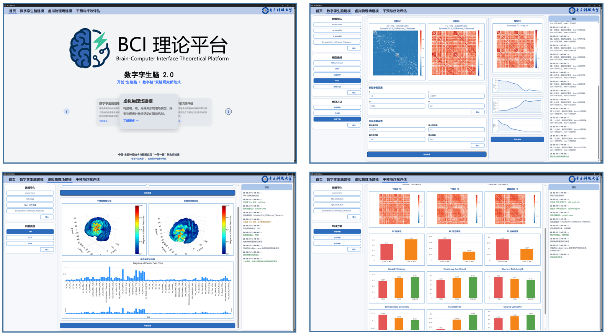
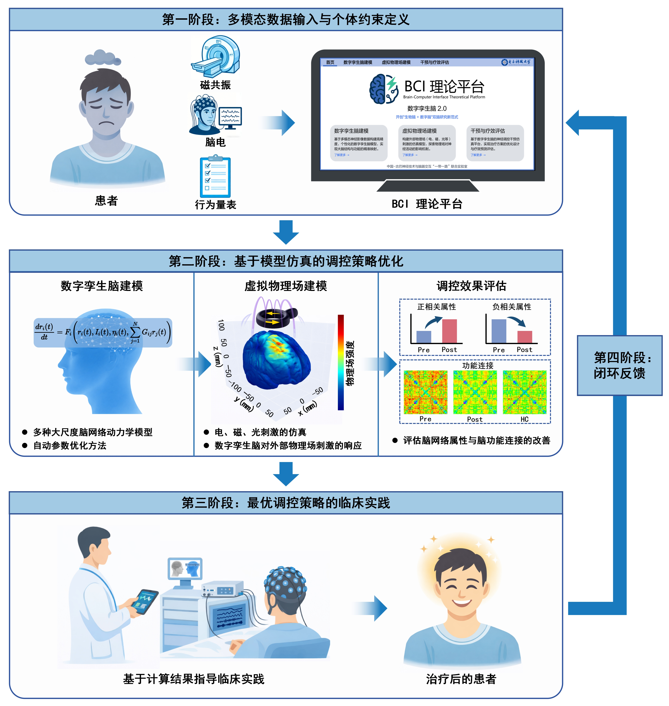
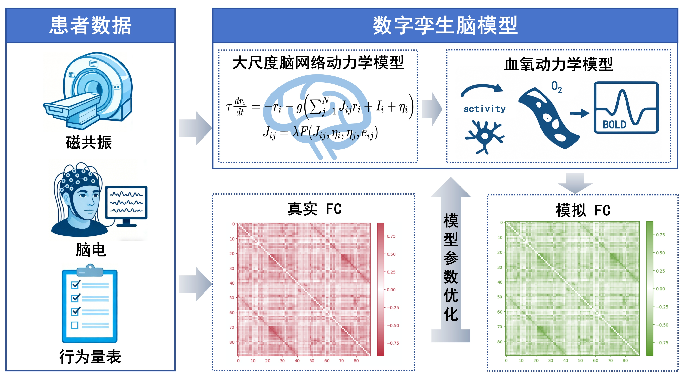
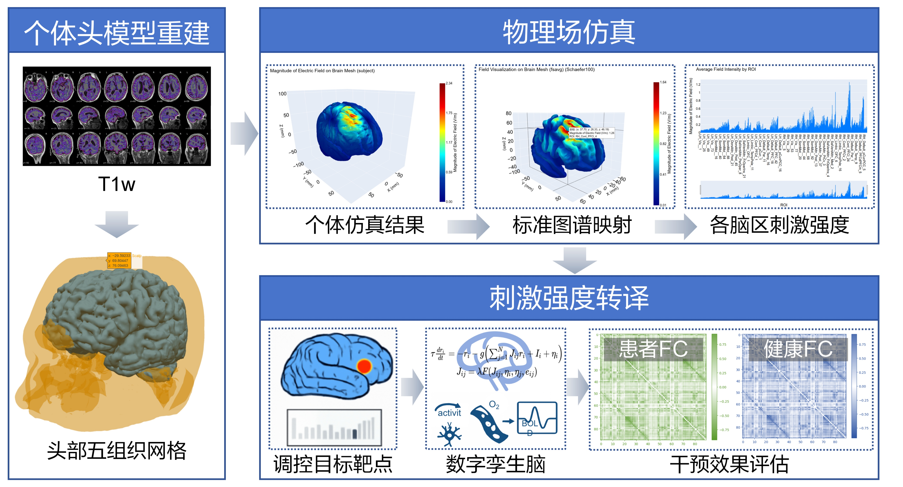
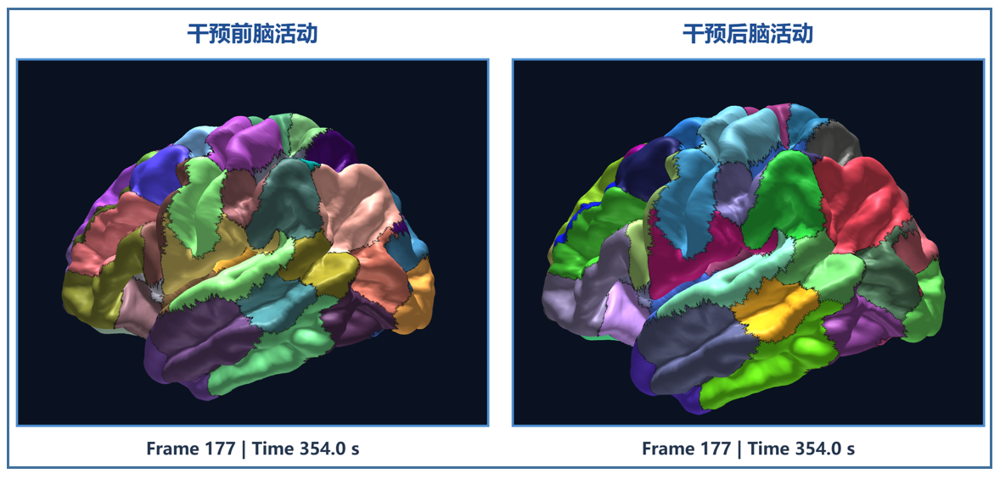
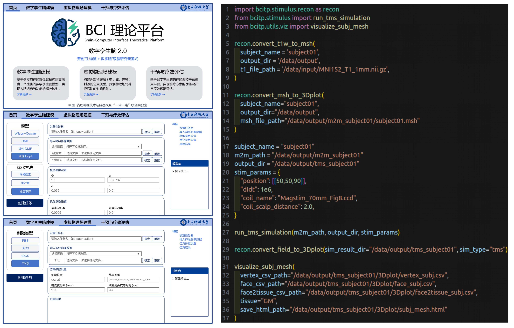

个体差异
融合个体脑结构、功能与活动信息，避免用单一平均模型代表所有个体。
BCITP · DIGITAL TWIN BRAIN
面向脑机接口理论研究的一体化数字仿真环境，贯通个体化数字孪生脑建模、外部刺激物理场仿真与脑网络响应研究。
电子科技大学中国—古巴神经技术与脑器交互“一带一路”联合实验室

WHY DIGITAL SIMULATION
脑影像采集和神经调控实验往往需要投入较多时间、设备与人员，并受到安全、伦理和受试者耐受等条件约束。数字仿真为实验前的比较与筛选提供新的计算路径。
融合个体脑结构、功能与活动信息，避免用单一平均模型代表所有个体。
在有限的真实实验条件下，先对候选刺激方案进行系统性模拟与比较。
连接外部物理刺激、脑网络动力学与可观测脑活动，辅助理解作用机制。
ONE COMPUTATIONAL CHAIN
平台在统一研究框架中组织脑影像预处理、个体化脑网络建模、虚拟物理场仿真、脑区尺度映射和结果可视化，为后续真实研究提供计算依据。
支持 Wilson–Cowan、动态平均场等大尺度脑网络动力学模型。
面向千脑区级精细建模，兼顾生物物理合理性与个体特异性。
Python 组织任务与数据流，高性能科学计算后端承担核心数值计算。
模块化接口便于增加模型、优化方法、刺激方式与可视化组件。
RESEARCH WORKFLOW
数字推演不替代真实实验，而是帮助研究者在进入实验前形成更清晰的候选方案，并通过后续实验持续验证和修正模型。

CORE MODULES
融合个体结构连接、功能连接和脑影像衍生指标，开展脑活动仿真、参数扫描与模型拟合，为外部刺激和机制研究提供数字载体。

从个体结构 MRI 出发重建头部组织，模拟电、磁、光等外部刺激的空间分布及作用过程，并将连续物理场映射至脑区尺度。

以矩阵、脑表面、ROI 和顶点级视图呈现连接组、物理场与模型结果，使复杂计算过程更易复核和解释。

FLEXIBLE ACCESS
完整平台提供图形化操作界面，算法层提供 Python 接口；既可支持个人计算机上的探索性研究，也可接入高性能计算环境开展批量仿真和参数搜索。

COLLABORATION
无论您希望在研究中试用脑机接口理论平台，还是参与平台的技术开发与能力建设，都欢迎与我们联系。
生物脑 × 数字脑